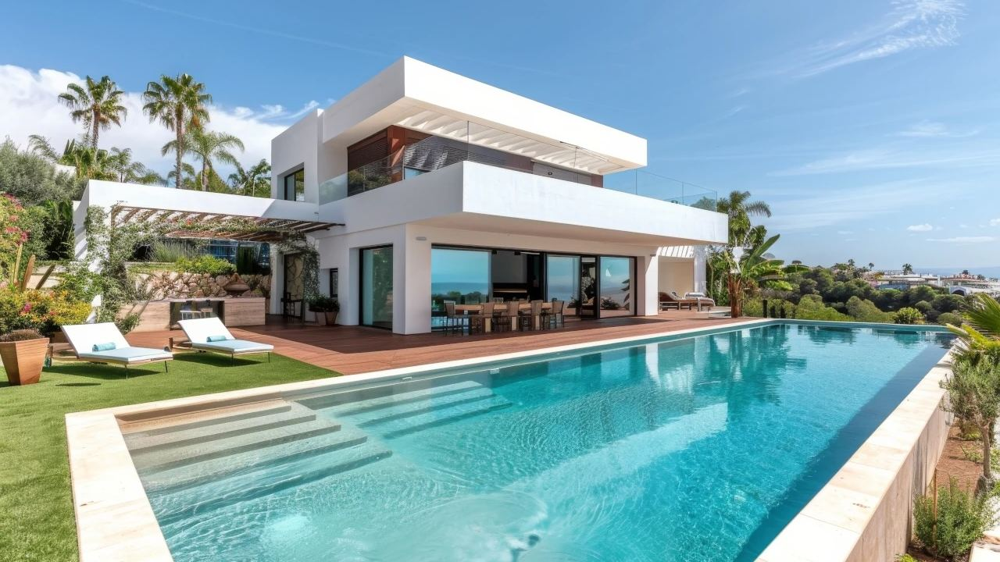
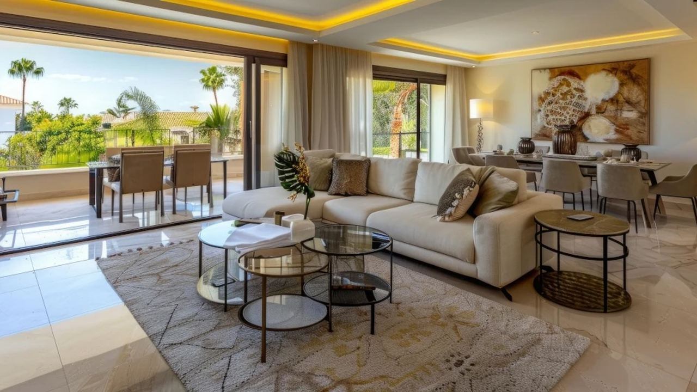
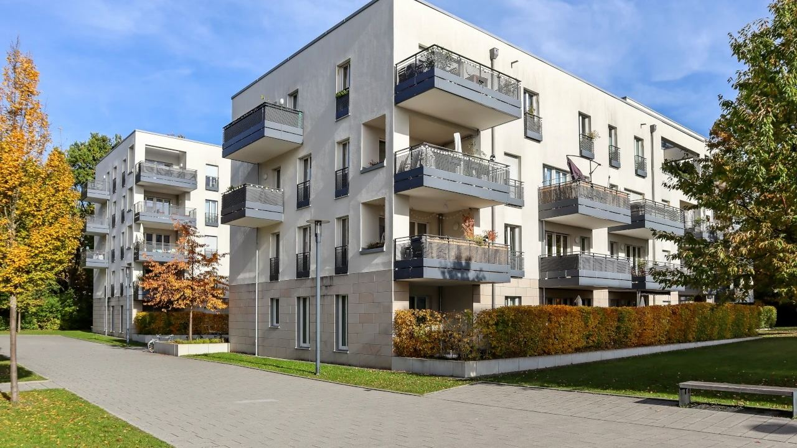
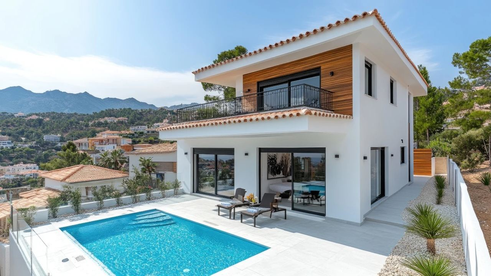
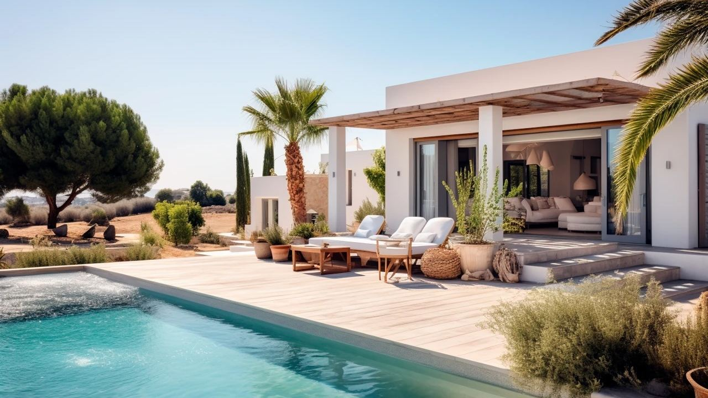

Buying · Costa del Sol
Luxury Villa or Luxury Apartment on the Costa del Sol?
 By Aleksandra Kobus · · updated · 4 min read
By Aleksandra Kobus · · updated · 4 min read

In short: An apartment is the easier choice: a lower price, lower running costs, security and a pool shared with neighbours, and you can lock the door and leave. It is also easier to rent out and to resell. A villa gives you privacy, space, your own pool and garden, and it holds value well in the best areas, but it costs more to buy and keep, needs someone to look after it when you are away and earns more per week but has fewer rental weeks. Choose by how long you will stay, how many people come with you and whether you want income or a family home.
On the Costa del Sol, from Málaga to Sotogrande, you can buy both: a penthouse with a sea view in Marbella or a villa with a garden in Benahavís. Both can be good buys. This comparison shows the real differences so you can choose with confidence.
At a glance
| Luxury apartment | Luxury villa | |
|---|---|---|
| Typical price (2026) | From about €500,000–700,000 for 2–3 bedrooms in Marbella or Estepona | Mostly from about €1.5 million in Marbella and Benahavís, less in Estepona and inland |
| Running costs | Lower: community fee covers pool, gardens and security | Higher: pool, garden, alarm, repairs |
| Privacy and space | Neighbours, terraces | Full privacy, garden, own pool |
| Leaving it empty | Easy: lock and leave | Needs a key holder and regular checks |
| Rental | More weeks booked, easier to manage | Higher weekly rate, fewer weeks |
| Resale | Larger pool of buyers | Fewer buyers, but strong in prime areas |
Prices

Prices on the Costa del Sol rise with the view, the distance to the beach and the area. As a rough guide in 2026, a good 2 or 3-bedroom apartment in Marbella, Estepona or Benahavís starts at about €500,000 to €700,000, and frontline beach or penthouse homes cost much more. Modern villas mostly start at about €1.5 million in Marbella and Benahavís, and prime villas in places like Sierra Blanca or La Zagaleta cost many millions. Estepona, Mijas and the inland areas are cheaper. See property prices in Spain and La Zagaleta.
Running costs

- Apartment: the community fee pays for the pool, gardens, cleaning, lifts and often 24-hour security. In luxury complexes it is often €200 to €600 a month. Add IBI, insurance and utilities. See comunidad de propietarios.
- Villa: you pay for everything yourself: pool maintenance, the gardener, the alarm, repairs, plus IBI, insurance and higher bills. Many villas are also in an urbanisation with a smaller community fee. Plan more per year than for an apartment of the same value. See buying a home with a pool.
Security and lifestyle

An apartment in a gated complex is the classic lock-and-leave home. You close the door, and the concierge, security and community look after the rest. It suits people who come several times a year for a few weeks.
A villa suits families, people who spend months at a time on the coast and anyone who values quiet and space. When it is empty, it needs a key holder, an alarm and regular checks. See looking after your home in Spain.
Rental income
Both can be let to holidaymakers, but in Andalusia the home must first be registered as tourist accommodation (vivienda de uso turístico), and some places limit new licences. Málaga city, for example, has frozen new tourist licences for three years, in force since July 2026. Check the community rules too.
- Apartments are booked for more weeks of the year, are easier to clean and manage and usually give a better return on the price.
- Villas earn much more per week, especially in summer and for golf groups, but are booked for fewer weeks and cost more to run.
See short-term rental rules and properties with investment potential.
Resale and value
Apartments have a larger pool of buyers, so they usually sell faster. Villas take longer to sell because each one is unique and the price is higher, but in prime areas with little land left, such as the Golden Mile or Benahavís, good villas have held their value well. In both cases the location, the view and the quality of the build matter most.
Which one suits you?

Ask yourself these questions:
- How many weeks a year will you be there?
- How many people will usually stay with you?
- Do you want rental income, a family home or both?
- Do you want privacy and a garden, or less to look after?
- What is your total budget, including running costs?
Short, frequent stays and rental income point to an apartment. Long stays with family and privacy point to a villa. For where to look, see buying a luxury villa in Spain.
Frequently asked questions
Is a villa or an apartment a better investment on the Costa del Sol?
Apartments usually give a better rental return on the price and sell faster. Villas earn more per week and hold value well in prime areas, but cost more to buy and run.
How much does a luxury apartment cost on the Costa del Sol?
As a rough guide in 2026, a good 2 or 3-bedroom apartment in Marbella or Estepona starts at about €500,000 to €700,000. Frontline and penthouse homes cost much more.
How much does a villa cost on the Costa del Sol?
Modern villas mostly start at about €1.5 million in Marbella and Benahavís. Estepona, Mijas and inland areas are cheaper, and prime villas cost many millions.
What are the running costs of a villa?
Pool maintenance, gardening, alarm, repairs, IBI, insurance and utilities, and sometimes a community fee. They are higher than for an apartment of the same value.
Can I rent out my villa or apartment to tourists?
Yes, if the home is registered as tourist accommodation in Andalusia and the community rules allow it. Some towns, such as Málaga city, limit new licences.
Let us help you choose

We can show you apartments and villas on the Costa del Sol side by side, with real running costs and rental figures, so you can compare. Contact us.
Sources: Euro Weekly News – Málaga tourist flat licence freeze in force (July 2026)